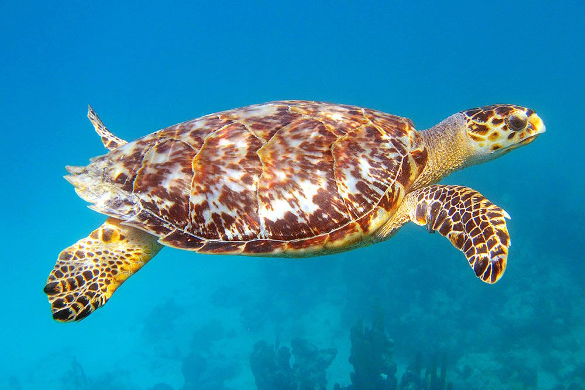

Distribution
Nesting sites of Sri Lanka includes Kataduwa, Bentota, Udappuwa, Kosgoda, Karaduwa, Talaimannar, Jaffna, Galkissa, Talawila, Palatupana, Amadhauwa. These turtles are found mainly in the tropical regions of the Atlantic, Pacific, Indian Oceans & Mediterranean Sea. They are most associated with tropical waters.

Breeding
The reproductive maturity of a female occurs in 3 years. Mating occurs roughly every 2 to 3 years. Copulation usually begins in shallow water near the shore. Males lie and wait in the shallow water for the females to return. Some times, males follow the females on shore.
Nesting generally occurs between April-June & December-January. Nesting females average a length of 87 cm in curved carapace length and weigh 80 kg. The entire nesting process takes roughly one to three hours. After mating, the females drag their heavy bodies high onto the beach during the night. Their gestation period is around 60 days (average).
They clear out an area and dig a nesting hole using their rear flippers. Next they lay their eggs and then proceed to fill in the pit in with their hind limbs. After the site is disguised, the turtles return to the sea. The females lay 3 clutches a year at an interval of roughly 13-15 days. The eggs measure 30-35mm. Sex determination is thought to be temperature-dependent. The baby turtles, usually weighing less than two dozen grams, hatch during the night after around 2 months. Around 96-177 offspring are produced without any parent involvement. They instinctually head for the sea, attracted by the reflection of the moon on the water.
Human impact & dangers
For years, humans have hunted the hawksbill turtles in order to sell their scutes. Also, humans eat the turtles as well as their eggs. The eggs are also in danger from other predators such as ants, rats, crocodiles, crabs or even dogs. Small mammals have been known to raid the nesting sites and dig up the turtles' eggs.
Directly after hatching, they face the most dangerous time of their lives: the journey to water. Although this scramble only lasts a few minutes, countless hatchlings are preyed on by large crabs. The hard shell of these turtles discourages predators from trying to eat them but some times unfortunately it does not stop them from harming them.